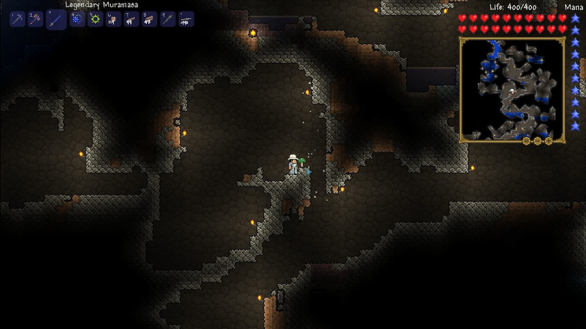
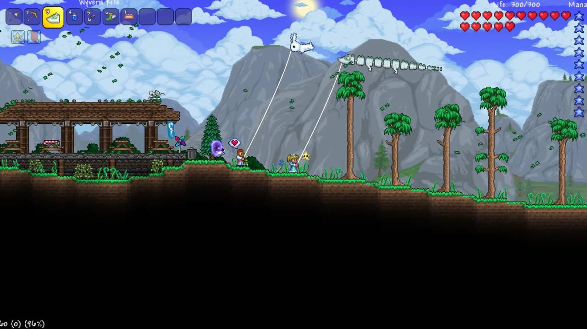
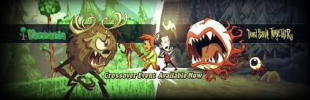
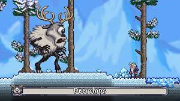

Terraria is a land of adventure! A land of mystery! A land that's yours to shape, defend, and enjoy. Your options in Terraria are limitless. Are you an action gamer with an itchy trigger finger? A master builder? A collector? An explorer? There's something for everyone. Start by building basic shelter, then dig for ore and other resources. Discover and craft over 500 weapons of magic, ranged, melee and summon varieties, as well as armor, and use them to battle hundreds of different enemies. Soon you'll be going head-to-head with any of a dozen enormous bosses. Go fishing, ride a mount, find Floating Islands, build houses for helpful NPCs, and much, much more.

Exploration in terraria
Terraria is the critically-acclaimed indie sandbox adventure by Re-Logic ™ that was released in May 2011 on Steam. In 2012, 505 Games, the publisher that acquired the publishing rights of Terraria, asked Codeglue to develop the iOS, Android and Windows Phone versions of the game. On 30th November 2020 terraria released the journey's end update adding new features such as kites and golfing with new weapons and bosses in the mix.

Kites in terraria
Re-logic, the vreators of the game, claimed it would be the end of the series but fans were excited to find out that a 1.4.3 update was going to be released on November 2021 in collaboration woth the hit series 'Don't Starve Together' introducing new bosses such as the deerclops from the latter.


A ingame battle against the deerclops
In conclusion, Terraria is a very addictive game worth every penny it is asking for and you will not regret adding this game to your library. The game is available on PC, PS4, Xbox one and the Nintendo Switch. On PC it is available on GOG(Good old games) and Steam